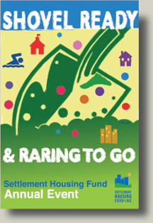

Settlement Housing Fund is a nonprofit developer of affordable housing and neighborhood amenities working to revitalize and strengthen economically diverse communities throughout New York City. Since 1969, we have developed over 55 projects with nearly 8,700 apartments -- rentals, cooperatives, condominiums, and two-family houses -- that are home to more than 25,000 low and moderate income residents, including formerly homeless people. Whenever possible, we incorporate commercial developments, community services and programs for children, young adults and families that provide opportunities for educational success and upward mobility
Settlement Housing Fund also acts as a development / marketing consultant and technical assistance provider to other housing organizations and the real estate community, as well as an advocate for affordable housing in New York.
Website Under
Construction
Upcoming Events and Projects
Settlement Housing Fund's
40th Anniversary

Thursday, June 4th, 2009
6 - 9 pm
Landmark on the Park
76th and Central Park West
Honoring
Nick Lembo, President
Monadnock Construction
and the
Fund for the City of New York
Event Chair
David G. Richardson, Esq.
PricewaterhouseCoopers
For tickets and information,
please call Settlement Housing
Fund, 212.265.6530
New Settlement
Community Campus
In the late 1980s, Settlement Housing Fund began the rehabilitation of 15 buildings in the devastated Bronx neighborhood of Mt. Eden to create 993 apartments that are home to more than 3,400 people. Today, New Settlement is a vibrant community with programs like the College Access Center and the Parents Action Committee, which provide important resources to the neighborhood's youth and families.
Settlement Housing Fund and New Settlement are now partnering with the School Construction Authority to build a new pre-K - 12th grade public school with a community center and swimming facility that will bring further revitalization and significant education, recreation and arts resources to the community.